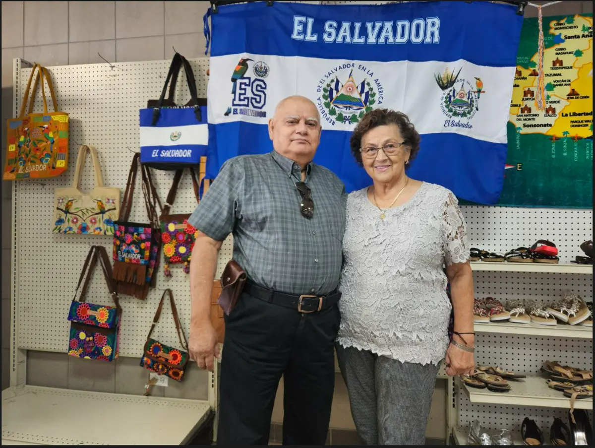
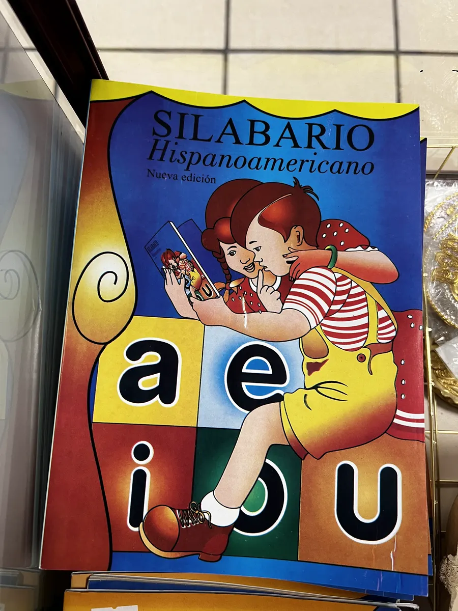

Historia
La historia de Jorge y Delia Romero
De un aula en El Salvador a una tiendita en Denver: así construyeron Jorge y Delia un hogar para la cultura, la comida y la comunidad.

La historia de los abuelos
Tienda Salvadoreña nació de la historia de amor entre Delia, una dedicada maestra de El Salvador, y Jorge, un trabajador incansable de la industria aérea en Ecuador. Al llegar a Denver, Delia soñaba con crear un lugar donde los centroamericanos pudieran sentirse en casa, y Jorge estuvo siempre a su lado para hacerlo realidad. Su primera tienda en Colorado Boulevard era tan pequeña como un clóset, pero ofrecía los sabores y tradiciones que recordaban a la gente su tierra natal. Con esfuerzo y corazón, crecieron hasta abrir la tienda más grande en East Colfax, donde hoy ofrecen una amplia variedad de productos que celebran la cultura centroamericana. Para Delia y Jorge, la tienda es mucho más que un negocio: es un pilar de la comunidad, una manera de mantener vivas las tradiciones en las familias de Denver, y un legado de amor, resiliencia y orgullo que sigue inspirando a sus hijos, nietos y vecinos.
Puntos clave
- El encuentro: Una maestra respetada en El Salvador conoce a Jorge, un hombre emprendedor y amable.
- La sociedad: Valores compartidos de educación, fe y servicio guían su camino.
- Los comienzos: Una tiendita en Colorado Boulevard crece con dedicación.
- El legado: Un pilar comunitario que sirve a Denver por más de tres décadas.
Herencia y nostalgia
Nuestro letrero – un punto de referencia y una bienvenida. 
Un pilar del aula – alfabetización, dignidad y raíces compartidas. Azul y blanco – el origen que llevamos a nuestro trabajo diario.
Nuestra Misión
Nuestra misión es mantener vivas las tradiciones salvadoreñas ofreciendo productos auténticos que nutren tanto el cuerpo como el espíritu. Inspirados por la dedicación de Jorge y Delia, servimos a la comunidad de Colorado con calidez, integridad y un compromiso con el orgullo cultural.
Nuestros Valores
- Autenticidad – productos genuinos que representan nuestra cultura.
- Familia – un negocio fundado en amor y legado.
- Comunidad – servir con calidez y respeto.
- Orgullo cultural – compartir nuestras raíces con Colorado.
Visítanos
Te invitamos a visitar Tienda Salvadoreña en Denver y ser parte de nuestra historia. Cada compra apoya un legado familiar y mantiene vivas las tradiciones de El Salvador.
Ir a Contacto